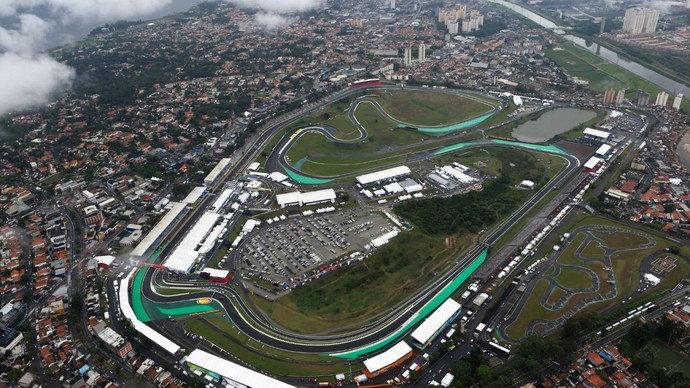
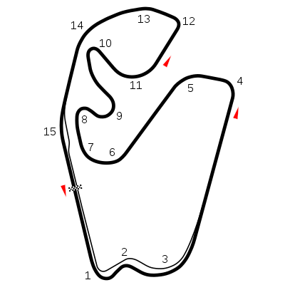

NAVEGUE
Home
Pilotos
Calendário/Tabela
Grand Prix
Construtoras
Últimas Notícias
GP do Brasil
SOBRE
A pista de Interlagos é um circuito de corrida localizado na cidade de São Paulo, Brasil. É uma das pistas mais famosas do mundo e é conhecida por sediar o Grande Prêmio do Brasil de Fórmula 1 desde 1973. A pista tem um comprimento de 4,309 km e apresenta uma série de curvas desafiadoras, incluindo a famosa curva do "S do Senna", nomeada em homenagem ao lendário piloto brasileiro Ayrton Senna. A pista também é conhecida por suas mudanças de elevação, com subidas e descidas íngremes que desafiam os pilotos e proporcionam uma experiência emocionante para os espectadores.
Circuitos Utilizados
Interlagos

INFORMAÇÕES DA CORRIDA

Localização
São Paulo, Brasil
Voltas
71
Percurso
4.309 km
Total
305.909 km
Curvas
15
Pole
Lewis Hamilton
Anos Disputados
48
Última Disputa
2019
Maior vencedor
Alain Prost
Última Corrida - Pódio
Max Verstappen